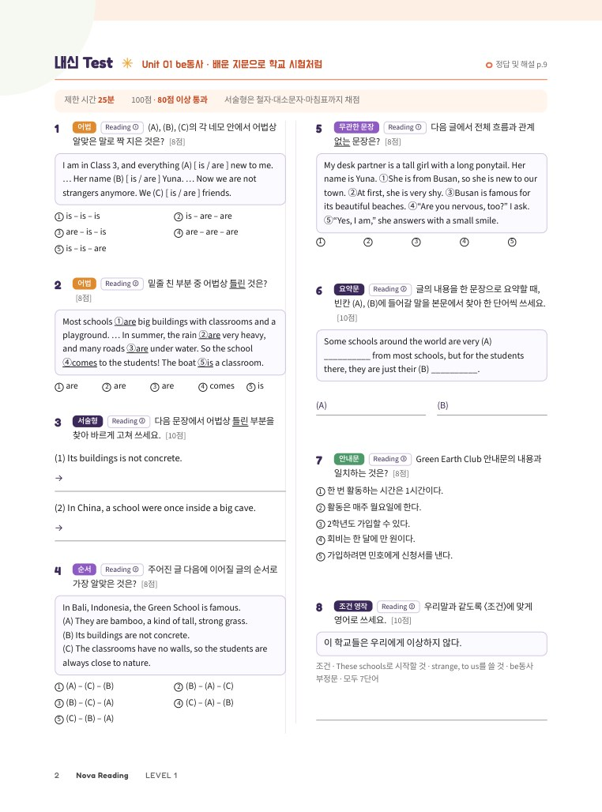
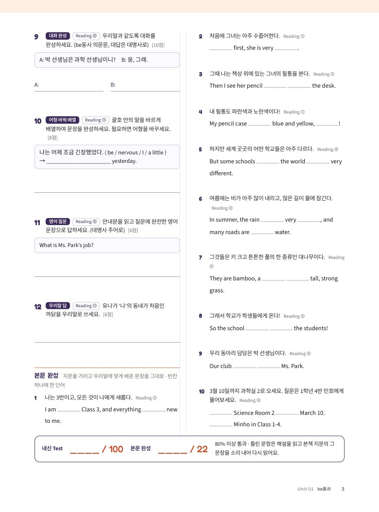
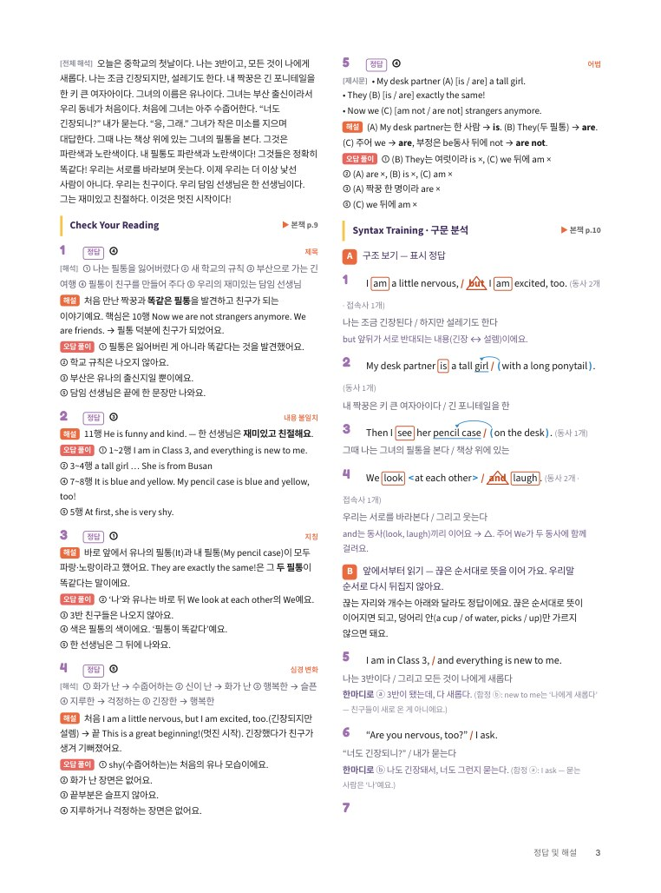

영어 독해 · 구문부터 수능 유형까지
NovaReading
LEVEL1
WORKBOOK
배운 지문으로 학교 시험처럼 연습하는 워크북
Unit별 내신 Test 12회조건 영작 · 서술형본문 완성채점 기준
NOVA ENGLISH워크북 · 별책
배운 지문으로
내신까지
본책에서 읽은 지문 세 개를 학교 시험처럼 바꿔
어법 · 순서 · 요약 · 조건 영작까지 풀고,
배운 문장을 그대로 쓰며 서술형을 대비해요.
1내신 변형 12문항
배운 지문을 어법 네모 · 틀린 곳 · 순서 · 무관한 문장 · 요약문으로 바꿔 25분 안에 풀어요.
2서술형 · 조건 영작
고쳐 쓰기, 〈조건〉 영작, 대화 완성, 어형 바꿔 배열 — 학교 서술형 유형을 모았어요.
3본문 완성
우리말을 보고 배운 문장을 그대로 쓰는 빈칸 연습. 철자까지 채점해요.
4100점 · 80점 통과
배점과 채점 기준을 따라 스스로 채점하고, 점수를 성장 기록표에 적어요.
미리 보기

내신 Test
본문 완성
해설 본책 지문
본책 지문구성워크북 24쪽Unit별 2쪽정답 및 해설은 별책
Nova Reading LEVEL 1Nova Grammar LEVEL 1과 짝 · 워크북